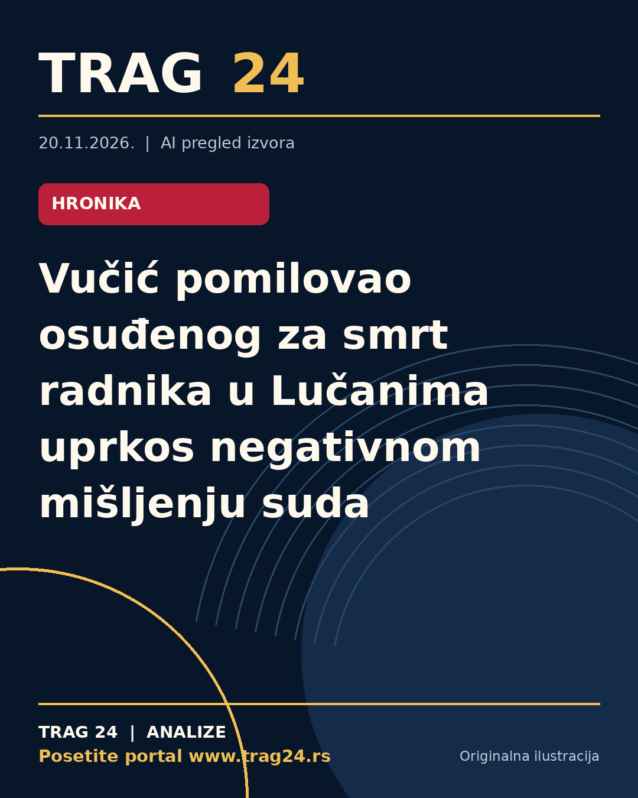

Vučić pomilovao osuđenog za smrt radnika u Lučanima uprkos negativnom mišljenju suda

ŠTA SE DOGODILO
Aleksandar Vučić, bivši predsednik Srbije, pomilovao je Toma Stojića, rukovooca sektora bezbednosti i zaštite na radu u fabrici „MB-Namenska“ iz Lučana. Stojić je pravnosnažno osuđen zbog smrti dvojice radnika iz fabrike baruta, Milomira Milivojevića i Milojka Ignjatovića, u požaru 2017. godine. Odluka o pomilovanju doneta je 27. septembra, iako je Osnovni sud u Ivanjici, koji je odlučivao po njegovoj molbi, ocenio da ne postoje razlozi za pomilovanje. Slučaj je javnosti poznat i zbog upornosti porodice Milivojevića u traženju pravde za smrt sina.
HRONOLOGIJA
Incident u fabrici desio se u julu 2017. godine kada su poginula dva radnika. Nakon višegodišnjeg postupka, u junu 2019. godine podignuta je optužnica protiv trojice rukovodilaca fabrike: direktora Radoša Milovanovića, Vladimira Lončarevića i Toma Stojića. Milovanović je preminuo u aprilu 2022. godine, pa je postupak protiv njega obustavljen, Lončarević je oslobođen, dok je Stojić osuđen na zatvorsku kaznu, koja je kasnije smanjena na dve godine. U septembru 2025. godine, samo 12 dana nakon što je sud odbio molbu za pomilovanje, Vučić je odlučio da Stojića pomiluje. Do kraja svog mandata, Vučić je pomilovao ukupno 49 osoba.
ŠTA NAVODE IZVORI
Sva tri izvora – Vreme, Insajder i Nova.rs – navode da je sud u Ivanjici ocenio da pomilovanje ne bi ostvarilo svrhu kažnjavanja niti prevencije, iako su uvažene okolnosti kao što su dugo trajanje postupka i medijski stres. Takođe se ističe da je Vučić pomilovanje doneo uprkos ovom negativnom mišljenju. Porodica Milivojević je odbila novčane kompenzacije i ponude za zapošljavanje kao što je ponuda direktora fabrike, tražeći krivičnu odgovornost umesto obeštećenja. Navodi se i da je advokat nekih okrivljenih, Dragan Palibrk, poznat i po zastupanju Vučića. Istaknuta je i činjenica da je slučaj dugo pratio veliki interes javnosti zbog ozbiljnosti tragedije.
ŠTA JE POTVRĐENO
Dobijene su potvrde da je Stojić pravnosnažno osuđen za smrt dvojice radnika u eksploziji 2017, da je sud odbio njegov zahtev za pomilovanje kao neopravdan, te da je bivši predsednik Vučić pomilovao Stojića uprkos tom negativnom mišljenju suda. Potvrđeno je i da su ostali optuženi oslobođeni ili da im je postupak obustavljen zbog smrti (Milovanović). Nadalje je potvrđeno da je to pomilovanje deo šire grupe od 49 pomilovanja koje je Vučić doneo pred kraj mandata.
ŠTA NIJE POTVRĐENO
Ni jedan od izvora ne navodi da je bilo koje drugo pravnosnažno osuđeno lice povezano sa ovom tragedijom pomilovano, niti detalje o daljim pravnim posledicama ili eventualnim žalbama koje nisu najavljene. Takođe nije potvrđeno da li će pomilovanje biti pravno osporavano i kakav bi mogao biti ishod eventualnih žalbi porodice ili advokata oštećenih.
ŠTA OSTАJE OTVORENO: Ostaje pitanje kako će se dalje odvijati pravni postupci u vezi sa ovom tragedijom, naročito u svetlu najava advokata da će se žaliti na pomilovanje. Takođe nije poznato kako će ova odluka uticati na zahteve za bezbednost radnika u fabrici i kod drugih rukovodilaca u sličnim slučajevima. Nije jasna ni reakcija drugih državnih institucija ili potencijalne dalje istrage povodom ove i srodnih tragedija.
Izvori
- https://vreme.com/vesti/vucic-pomilovao-osudjenog-za-smrt-radnika-u-lucanima-uprkos-misljenju-suda/
- https://insajder.net/prenosimo/birn-vucic-suprotno-misljenju-suda-pomilovao-osudenog-za-smrt-dvojice-radnika-u-lucanima
- https://nova.rs/vesti/hronika/vucic-suprotno-misljenju-suda-pomilovao-osudjenog-za-smrt-dvojice-radnika-u-lucanima/
Ova analiza je pripremljena uz pomoć veštačke inteligencije na osnovu javno dostupnih izvora. Navodi izvora nisu nužno nezavisno potvrđeni.